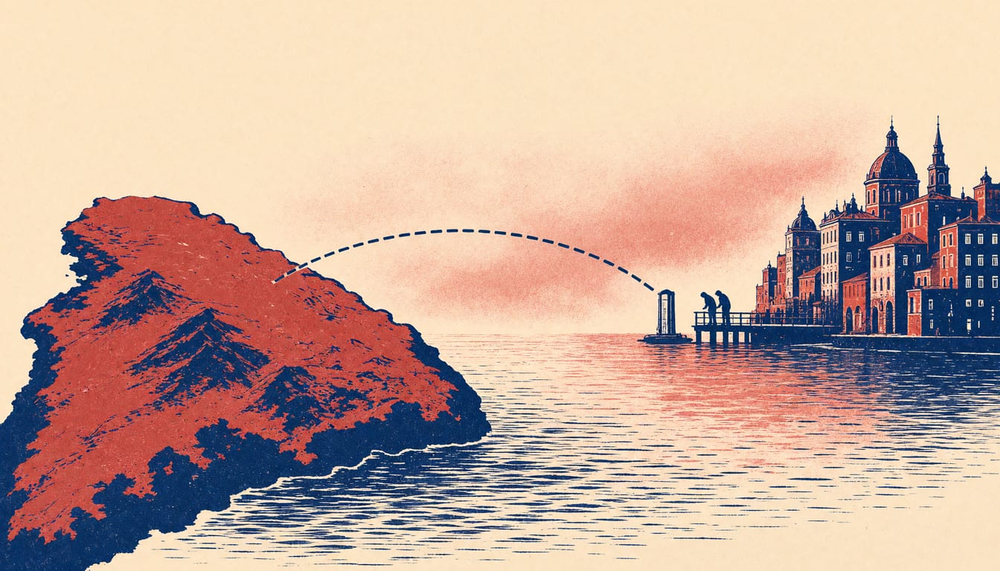

Australia pays to join Horizon Europe, but its universities cannot host ERC grants
Australian researchers can bid for collaborative projects under the €52.4 billion Pillar II from January 2027. The Group of Eight universities will put in up to A$20 million, matching the government's share of the joining fee.

Australia's Minister for Industry and Innovation, Tim Ayres, signed the agreement for Horizon Europe access in Brussels on 12 November. From January 2027, Australian entities can bid for Pillar II funding on equal terms with EU member states, including leading consortia. The Group of Eight universities has committed a one-off co-investment of up to A$20 million in 2027, matching the government's contribution to the joining fee.
The deal opens the fund that pays for joint projects, not the one that backs European Research Council (ERC) grants. Pillar II, worth €52.4 billion, finances collaborative research in areas including health, climate, energy and digital technologies. But the association stops there. Australian universities will not be allowed to host winners of ERC grants.
The European Commission and Australia concluded negotiations on Australia's association to Horizon Europe on 9 June 2026. With this agreement, Australia becomes the 24th country associated with Horizon Europe, the European Union's research funding programme. The priority areas for 2027 are supply chain security, critical technologies, advanced computing, climate and clean energy, health, space and critical minerals.
Australian participants will not get a dedicated NHMRC grant to take part in 2027. The NHMRC says its 2027 NHMRC–Horizon Europe grant opportunity will not proceed, and that it will not run a separate one to support Australian participation. Ayres said the agreement will connect Australian researchers and innovators with leading international expertise in areas including climate, energy, health and emerging technologies.
The Horizon Europe Agreement now goes to the Australian Parliament, where the Joint Standing Committee on Treaties, a parliamentary committee that reviews treaties, will scrutinise it. The European Commission expects the association process to be formally completed by mid-2027, once that scrutiny is done. If Australia wants to remain in Horizon Europe after the current programme ends, it will have to negotiate a new deal before the next seven-year programme starts in 2028.